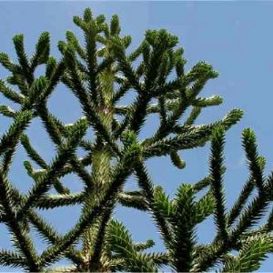

An introduction to the Monkey Puzzle
Araucaria araucana (commonly called the monkey puzzle tree, monkey tail tree or Chilean pine) is an evergreen tree growing to 40 m (130 ft) tall with a 2-m (7-ft) trunk diameter. The tree is native to central and southern Chile and western Argentina.
Characteristics
- The leaves are thick, tough, and scale-like, triangular, 3-4 cm long, 1-3 cm broad at the base, and with sharp edges and tips.
- This tree is usually dioecious, with the male and female cones on separate trees, though occasional individuals bear cones of both sexes.
- The tree is wind pollinated. The female (seed) cones, which mature in autumn about 18 months after pollination, are globose, large, 12-20 cm in diameter, and hold about 200 seeds.
